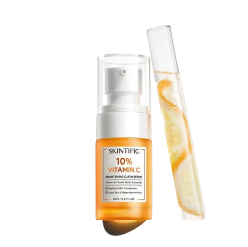

Skintific
Skintific is one of the beauty products from Canada that has been laboratory-tested as the best choice for the tropical skin of Indonesians. With natural ingredients, alcohol-free, paraben-free, and SLS-free, it is safe for all skin types and can certainly be used by pregnant and breastfeeding mothers.